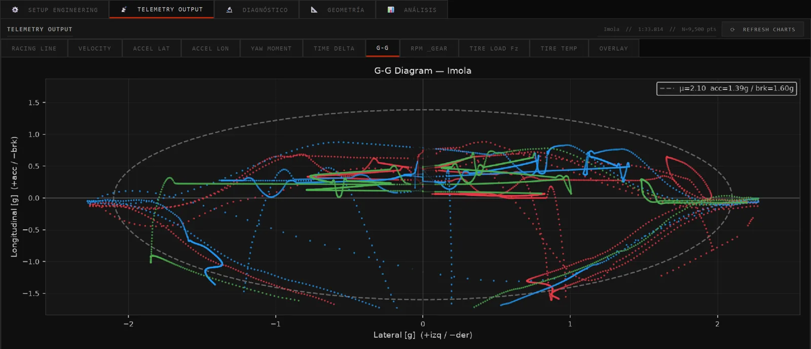

01 / 07
Vuelta y telemetríaLap & telemetry
¿Cuánto tarda el auto y dónde gana o pierde?How fast is the car, and where does it gain or lose?
- Tiempo de vuelta y por sector, con elevación y peralte de la pistaLap and sector times, including track elevation and banking
- Velocidad, aceleraciones, momento de guiñada y delta de tiempoSpeed, accelerations, yaw moment and time delta
- Diagrama G-G, marchas y RPMG-G diagram, gears and RPM
- Carga y temperatura de cada neumático a lo largo de la vueltaLoad and temperature of each tyre around the lap
- Exporta CSV, IBT para AiM Race Studio y .ztracksExports CSV, IBT for AiM Race Studio and .ztracks
